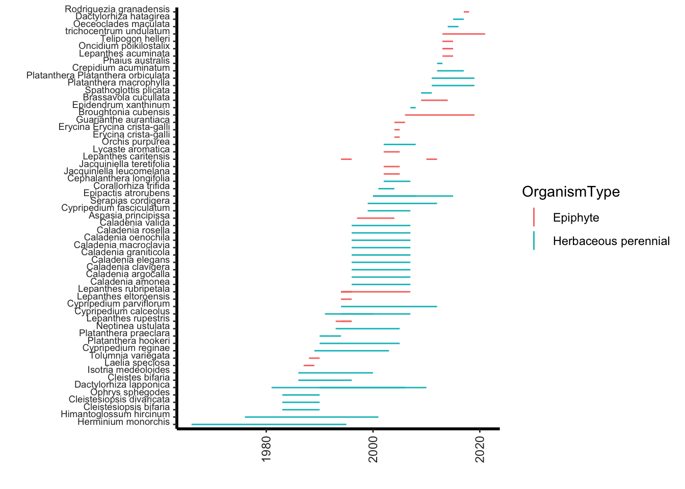
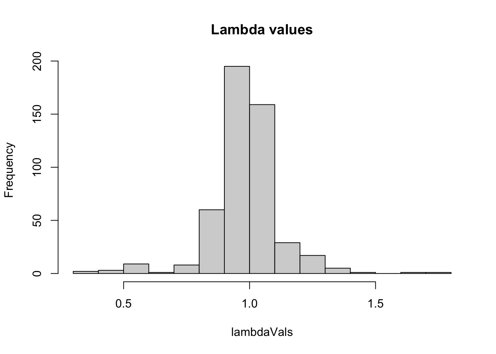
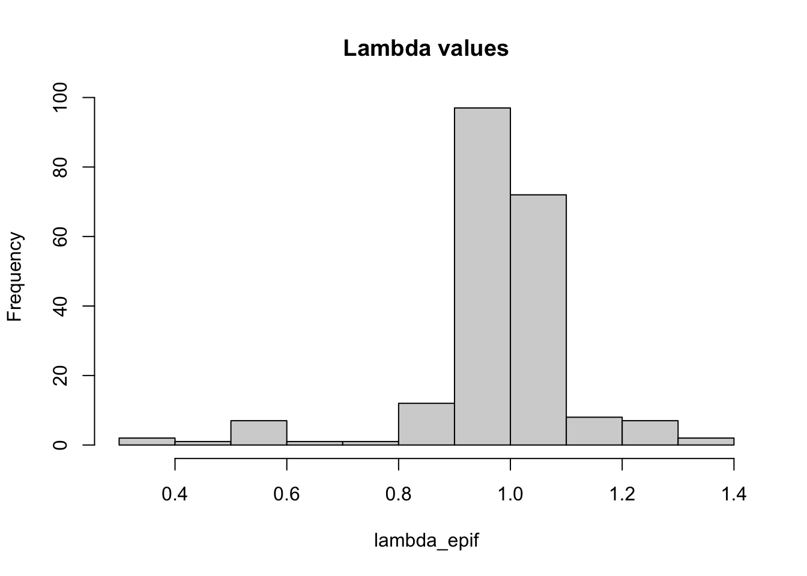
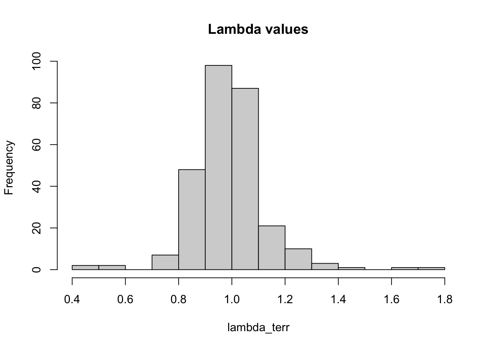
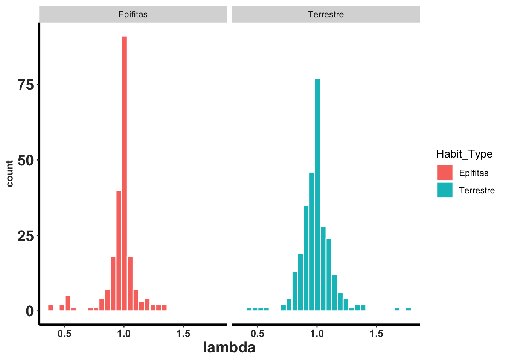
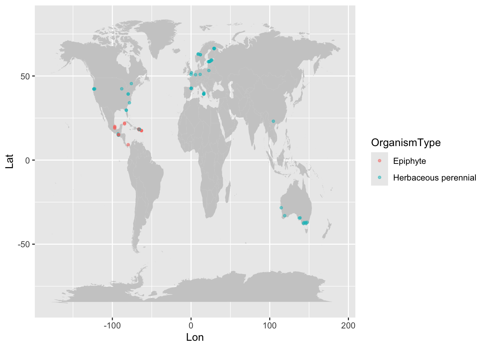

Librerías de R requeridas para el siguiente módulo
Code
library(Rcompadre) # Paquete para trabajar con la base de datos de COMPADRE y COMADRElibrary(tidyverse) # Paquete para activar multiples paqueteslibrary(gt) # Paquete para formatear tablaslibrary(kableExtra) # Paquete para formatear tablaslibrary(readxl)library(broom)library(ggdist)library(distributional)library(leaflet)library(Rage) # función para calcular el largo de vida esperadalibrary(car)library(popdemo)library(WRS2)
Uno de los esfuerzos más grandes en la ecología de poblaciones es la base de datos de COMPADRE y COMADRE. COMPADRE es una base de datos de matrices de transición de estados de poblaciones de plantas y COMADRE es una base de datos de matrices de transición de estados de poblaciones de animales. Estas bases de datos son una fuente de información para evaluar la dinámica de poblaciones de plantas y animales. En este capítulo se presenta una introducción a la base de datos de COMPADRE y algunas de las funciones en los paquetes de Rcompadre y Rage. La información aquí no sustituye la información provista en la página web de COMPADRE <https://compadre-db.org/> y los tutoriales que se encuentran en la siguiente página <https://compadre-db.org/Education>.
El valor de las bases de datos es tener en un mismo sitio una gran cantidad de información donde la información este organizado de la misma manera y accesible en adición a tener la información en un formato que se puede usar en análisis. En el caso de COMPADRE y COMADRE, la información esta organizada en matrices de transición de estados de poblaciones (MPM) que se pueden usar para evaluar la dinámica de poblaciones de plantas y animales y con múltiples variables, tal como sus coordinadas geográficas, el tipo de hábitat, la duración de los estudios, la fuente de la información, entre otros.
En este capítulo se aprende a utiliza la base de datos de COMPADRE para evaluar la dinámica de poblaciones de orquídeas. Se evalúa como extraer diferentes tipos de datos para responder a preguntas específicas.
Acceso a los datos de COMPADRE.
Bajando el archivo de datos
Hay dos métodos de tener acceso a los datos de COMPADRE (datos de dinámica poblacional de plantas) y COMADRE (datos de dinámica poblacional de animales). Los datos se pueden accesar directamente de la pagina de web o bajar el archivo de datos al siguiente enlace <https://compadre-db.org/Data/Compadre> seleccionando la pestaña de Download COMPADRE o Download COMADRE.
Para tener acceso a los datos cuando no esta conectado al internet es necesario bajar el archivo y subirlos en su proyecto de RStudio. Al momento de construir el libro la versión más reciente de COMPADRE es la versión 6.23.5.5.0 (May_06_2023) y se puede bajar al siguiente enlace <<https://compadre-db.org/Data/Compadre/COMPADRE_v.
Acesso a los datos de su computadora
USAR el código siguiente si tiene los datos bajado a su computadora.
load(dirección/al/archivo/a/su/proyecto/de/RStudio) si tiene el repositorio en su computadora (preferiblemente en su proyecto de RStudio)
Rastreando los datos con el enlace de web
Usando la función cdb_fetch() se puede bajar los datos directamente de la pagina de web de COMPADRE. Esta función se encuentra en el paquete de Rcompadre.
Code
compadre <-cdb_fetch("compadre") # Usar este código para bajar los datos del repositorio de COMPADRE.
This is COMPADRE version 6.23.5.0 (release date May_06_2023)
See user agreement at https://compadre-db.org/Help/UserAgreement
See how to cite with `citation(Rcompadre)`
Renombrar la base datos a algo sencillo
En este script se renombrar la base de datos de COMPADRE a algo más sencillo TodasSp, reemplazando compadre.
Se visualiza el nombre de cada columna en la base de datos.
Hay 59 variables en la base de datos de COMPADRE.
Code
#TodasSp=as_cdb(compadre) # Un paso critico: Convertir la base de datos anterior COM(P)ADRE (de clase 'list') en la base en un objeto CompadreDB (COMPADRE Database)TodasSp=compadrenames(TodasSp) # La lista de los nombres de las variables en el archivo COMPADRE, Nota que 59 variables en la base de datos de COMPADRE.
dim(TodasSp) # La base de datos de COMPADRE tiene 8994 filas y 59 columnas (variables)
[1] 8994 59
Evaluar si un genero o especie este en la base de datos de COMPADRE
Para filtrar un genero específico se puede usar el siguiente código.
Aquí seleccionamos todas las matrices del genero Epipactis.
Nota que hay 59 filas, que corresponde típicamente a 59 matrices de diferentes poblaciones, tiempo o un análisis teóricos.
This shows that the species added Epidendrum xanthinum is not yet included in the data base
Code
Epi = TodasSp %>%filter(Genus %in%c("Epipactis")) # Filtrar la información de *Epipactis* en la base de datos.Epi # Nota que en el genero *Epipactis*, tenemos 51 fila, pero todas son de la misma especie de dos estudios distintos.
Extraer (filter) solamente las especies de la familia Orchidaceae de la base completa de datos de COMPADRE.
Code
index_O=TodasSp %>%filter(Family %in%c("Orchidaceae")) # Extraer la orquídeas de la base de datos. head(index_O, n=3) # para visualizar las primera 3 filas de la base de datos de COMPADRE para las orquídeas.
A COM(P)ADRE database ('CompadreDB') object with 3 SPECIES and 3 MATRICES.
# A tibble: 3 × 59
mat MatrixID SpeciesAuthor SpeciesAccepted CommonName Kingdom Phylum
<list> <int> <chr> <chr> <chr> <chr> <chr>
1 <CompdrMt> 238285 Caladenia_amonea Caladenia amon… <NA> Plantae Trach…
2 <CompdrMt> 238286 Caladenia_argoc… Caladenia argo… <NA> Plantae Trach…
3 <CompdrMt> 238287 Caladenia_clavi… Caladenia clav… <NA> Plantae Trach…
# ℹ 52 more variables: Class <chr>, Order <chr>, Family <chr>, Genus <chr>,
# Species <chr>, Infraspecies <chr>, InfraspeciesType <chr>,
# OrganismType <chr>, DicotMonoc <chr>, AngioGymno <chr>, Authors <chr>,
# Journal <chr>, SourceType <chr>, OtherType <chr>, YearPublication <chr>,
# DOI_ISBN <chr>, AdditionalSource <chr>, StudyDuration <chr>,
# StudyStart <chr>, StudyEnd <chr>, ProjectionInterval <chr>,
# MatrixCriteriaSize <chr>, MatrixCriteriaOntogeny <chr>, …
Cual son los géneros de la familia Orchidaceae
Cual son los géneros de la familia Orchidaceae incluidos en la base de datos de COMPADRE?
se usa la función unique() para seleccionar los géneros únicos en la base de datos.
Contabilizar cuantas matrices y variables estan incluidas en el archivo
La base de datos de orquídea tiene un total de 647 filas con 59 variables, por consecuencia tiene 647 matrices. Esas matrices de la misma especie son de diferentes poblaciones, tiempo o un análisis teóricos. Nota que las 647 no son de diferentes especies, pero de especies que pueden haber sido muestreado en diferentes poblaciones o años.
Code
dim(index_O)
[1] 647 59
La fuente de la información
Para saber cuantos especies distintas y los manuscritos asociado a los estudios. En este caso los de esas 53 fuentes de información publicada, revisada por pares, tesis o informes técnicos. Algunas especies fueron estudiada y publicada en más de un manuscrito. Nota que las 9 primeras filas corresponde a 9 especies de Caladenia publicado en el mismo articulo. Se termina con 53 especies/publicaciones.
A COM(P)ADRE database ('CompadreDB') object with 44 SPECIES and 53 MATRICES.
# A tibble: 53 × 3
mat SpeciesAccepted DOI_ISBN
<list> <chr> <chr>
1 <CompdrMt> Caladenia amonea 10.1071/BT08167
2 <CompdrMt> Caladenia argocalla 10.1071/BT08167
3 <CompdrMt> Caladenia clavigera 10.1071/BT08167
4 <CompdrMt> Caladenia elegans 10.1071/BT08167
5 <CompdrMt> Caladenia graniticola 10.1071/BT08167
6 <CompdrMt> Caladenia macroclavia 10.1071/BT08167
7 <CompdrMt> Caladenia oenochila 10.1071/BT08167
8 <CompdrMt> Caladenia rosella 10.1071/BT08167
9 <CompdrMt> Caladenia valida 10.1071/BT08167
10 <CompdrMt> Epipactis atrorubens 10.1016/j.biocon.2017.04.019
# ℹ 43 more rows
Frecuencia de autores unicos en la base de datos
Igualmente podemos evaluar cuantos distintos autores son responsable de esas publicaciones. Un total de 37 grupos de autores únicos la fuente de esos artículos.
ROBERTO:
¿HAY una manera de contabilizar los nombres específicos (únicos), no por grupo? Para saber quien más publica sobre orquídeas.
A COM(P)ADRE database ('CompadreDB') object with 1 SPECIES and 1 MATRICES.
# A tibble: 1 × 5
SpeciesAccepted mat Authors DOI_ISBN MatrixDimension
<chr> <list> <chr> <chr> <int>
1 Telipogon helleri <CompdrMt> Raventós; García-Gonzál… 10.1080… 3
Extraer la matriz
En el siguiente script se enseña la matrices de Telipogon helleri y las etapas de esta matrices. Nota que el objeto mat es una lista de matrices que incluye la matriz de transición (matU) de estados de una población, la matriz de fecundidad (matF), la matriz de clonaje (matC) y la suma de las tres matrices (matA=matU+MatF+matC) vea el capitulo de Matrices de transición, fecundidad y clonal
La información incluye la clases/etapas que los autores usaron. El ciclo de vida incluyo 3 etapas, 1 inmaduras (S1-2) y 2 etapas de adultos (S3 y S4).
Para evaluar el largo de tiempo por estudio se necesita seleccionar una combinación de variables única
NOTA: OrganismType es una variable que indica si la orquídea es un epifita o terrestre. Roberto MUCHOS están erroneos.
- Todos las Lepanthes son epifitas, pero hay unas que son terrestres en la base de datos. - Todas las Caladenia son terrestres, pero hay unas que son epifitas en la base de datos.
Code
#names(index_O) Los nombres de las variablesSPECIES_O=index_O %>%select(StudyStart, StudyEnd, SpeciesAccepted, YearPublication, Authors, DOI_ISBN, OrganismType, MatrixPopulation, mat) %>%group_by(SpeciesAccepted, YearPublication, OrganismType, StudyStart, StudyEnd) %>%summarize(n_populations =length(unique(MatrixPopulation))) %>%arrange(SpeciesAccepted) %>%mutate(StudyStart=as.numeric(StudyStart)) %>%mutate(StudyEnd=as.numeric(StudyEnd)) %>%drop_na(StudyStart, StudyEnd)SPECIES_O
Determinar cuantas poblaciones fueron muestreadas por especies
Cual es la frecuencia de cantidad de poblaciones por especies en la base de datos. La mayoría de los estudios usaron una sola población, pero hay estudios que usaron hasta 18 poblaciones distintas. Estas poblaciones pudiese ser de diferentes publicaciones o de las mismas poblaciones pero de diferentes fuentes.
Hay estudios que duraron pocos tiempos. El mínimo es de dos periodos de tiempo para calcular un periodo de transición. Hay otros estudios que muestrearon las poblaciones por mucho meas tiempo. Nota que tambien hay especies que fueron muestreados multiples veces pero a cada mes (los trabajos de Tremblay con Lepanthes) y otros a cada año.
La duración de los estudios en la base de datos de COMPADRE. La mayoría de los estudios duraron pocos años.
Aquí vemos cuando comenzaron los estudios comenzaron y terminaron basado si las plantas son epifitas o no.
Warning: A numeric `legend.position` argument in `theme()` was deprecated in ggplot2
3.5.0.
ℹ Please use the `legend.position.inside` argument of `theme()` instead.

Code
ggsave("Figures/Lenght_survey.png")
Saving 7 x 5 in image
Tiempo de duración de las investigaciones.
Figura de las duración de las investigaciones en la base de datos de COMPADRE. La mayoría de los estudios de orquídeas epifitas duraron pocos años al comparar con especies terrestres.
Saving 7 x 5 in image
`stat_bin()` using `bins = 30`. Pick better value with `binwidth`.
Warning: Removed 1 row containing non-finite outside the scale range
(`stat_bin()`).
Evaluación de cumplimiento de condiciones
Para los análisis de PMP es necesario que la matrices cumple con ciertas condiciones. Dependiendo de la pregunta científica sea tiene que evaluar si esas matriz tienen las condiciones necesarias. Una de estas condiciones es la ergodicidad e irreducibilidad.
check_ergodic: Para la definición de ergodicidad vea Capitulo xx.
check_irreducible: Para la definición de irreducibilidad vea Capitulo xx.
check_NA_A: Determinar si hay valores faltantes en ‘matA’ Los valores faltantes (“NA”) en las matrices impiden que la mayoría de los cálculos utilicen esas matrices.
check_NA_U: Determinar si hay valores faltantes en ‘matU’ Los valores faltantes (“NA”) en las matrices impiden que la mayoría de los cálculos utilicen esas matrices.
check_NA_F: Determinar si hay valores faltantes en ‘matF’ Los valores faltantes (“NA”) en las matrices impiden que la mayoría de los cálculos utilicen esas matrices.
check_NA_C: Determinar si hay valores faltantes en ‘matC’. Los valores faltantes (“NA”) en las matrices impiden que la mayoría de los cálculos utilicen esas matrices.
check_zero_U: Determinar si la ‘matU’ tiene todos ceros (incluido ‘NA’). Las submatrices compuestas enteramente de valores cero pueden resultar problemáticas. Puede haber buenas razones biológicas para este fenómeno. Por ejemplo, en la población focal particular en el año focal particular, realmente no se registró una supervivencia. Sin embargo, las submatrices de valor cero pueden provocar que algunos cálculos fallen y puede ser necesario excluirlas.
check_zero_F: Determinar si la ‘matF’ tiene todos ceros (incluido ‘NA’). Las submatrices compuestas enteramente de valores cero pueden resultar problemáticas. Puede haber buenas razones biológicas para este fenómeno o de preguntas científicas. Por ejemplo, en la población particular en el año particular, realmente no se registró reproducción. Sin embargo, las submatrices con valores de cero pueden provocar que algunos cálculos fallen y puede ser necesario excluirlas. En otros estudios no se evaluó la fecundidad ya que estos parámetros no eran necesaria para contestar las preguntas científicas.
check_zero_U_colsum: Determinar si las columnas de ‘matU’ suman a cero, esto implica que no hay supervivencia de esa etapa en particular. Esta puede ser una parametrización perfectamente válida para un año/lugar en particular, pero es biológicamente irrazonable a largo plazo y los usuarios pueden desear excluir matrices problemáticas de su análisis.
check_singular_U: Determinar si ‘matU’ es singular. Se dice que las matrices son singulares si no se pueden invertir. Se requiere inversión para muchos cálculos matriciales y, por lo tanto, la singularidad puede hacer que algunos cálculos fallen.
check_component_sum: Determinar si las submatrices ‘matU’/‘matF’/‘matC’ suman a ‘matA’. Un MPM completo (“matA”) se puede dividir en las submatrices que lo componen (es decir, “matU”, “matF” y “matC”). La suma de estas submatrices debe ser igual al MPM completo (es decir, ‘matA’ = ‘matU’ + ‘matF’ + ‘matC’). A veces, sin embargo, se producen errores de modo que las submatrices NO suman ‘matA’. Normalmente, esto se debe a errores de redondeo, pero es posible que se produzcan errores más importantes.
check_ergodic: Determinar si ‘matA’ es ergódico (ver isErgodic). Algunos cálculos matriciales requieren que el MPM (“matA”) sea ergódico. Los MPM ergódicos son aquellos en los que existe un único estado estable asintótico que no depende de la estructura de la etapa inicial. Por el contrario, los MPM no ergódicos son aquellos en los que existen múltiples estados estables asintóticos, que dependen de la estructura de la etapa inicial. Los MPM que no son ergódicos suelen ser biológicamente irrazonables, tanto en términos de la descripción de su ciclo de vida como de su dinámica proyectada. Hacen que algunos cálculos fallen.
check_irreducible: Determinar si ‘matA’ es irreducible (ver isIrreducible). Algunos cálculos matriciales requieren que el MPM (“matA”) sea irreducible. Los MPM irreducibles son aquellos en los que las tasas de transición parametrizadas facilitan el paso de todas las etapas a todas las demás etapas. Por el contrario, los MPM reducibles representan ciclos de vida incompletos donde no son posibles caminos desde todas las etapas a todas las demás etapas. Los MPM que son reducibles suelen ser biológicamente irrazonables (pero no siempre), tanto en términos de la descripción de su ciclo de vida como de su dinámica proyectada. Hacen que algunos cálculos fallen. La irreductibilidad es necesaria pero no suficiente para la ergodicidad.
check_primitive: Detemrminar si ‘matA’ es primitivo (ver isPrimitive). Una matriz primitiva es una matriz no negativa que es irreducible y tiene un solo valor propio de módulo máximo. Por lo tanto, esta verificación es redundante debido a la superposición con ‘check_irreducible’ y ‘checkErdogic’.
check_surv_gte_1: Determinar si ‘matU’ contiene valores iguales o mayores que 1. La supervivencia está limitada entre 0 y 1. Los valores superiores a 1 no son biológicamente razonables (vea capitulo Impacto de Datos sin sentidos).
Usando la función cdb_flag se puede evaluar todas las opciones en la base de datos de COMPADRE.
Usando la función cdb_flag se identifica problemas potenciales en las matrices de transición de estados de las poblaciones. Esa función añade una fila por opciones en la matriz. Nota que para cada prueba anterior crea una columna con TRUE o FALSE para cada matriz en la base de datos.
Code
#Orchids_New=as_cdb(index)#compadre$mat[index]Compadre_flagged <-cdb_flag(index_O) # Evaluación de todas las opciones en la base de datos de COMPADRECompadre_flagged %>%select(mat, SpeciesAccepted, starts_with("check"))
En los siguientes scripts se filtra para las matrices con ciertas condiciones para evaluar si las matrices son ergódicas e irreducibles. Notas las matrices que son ergódica son irreducibles, pero no todas las matrices irreducibles son ergódicas. Evalué la cantidad de filas en cada caso.
Code
Mat_ergodic <-subset(Compadre_flagged, check_NA_A ==FALSE& check_ergodic ==TRUE) # para evaluar si las matrices son ergódicasMat_ergodic
Mat_erg_irred <-subset(Compadre_flagged, check_NA_A ==FALSE& check_irreducible ==TRUE& check_ergodic ==TRUE) # para evaluar si las matrices son ergódicas e irreducibles al mismo tiempoMat_erg_irred
Ahora usando las matrices que cumple con las condiciones de ergodicidad y irreducbilidad se puede calcular el valor propio de lambda.
La función eigs calcula los valores propios de una matriz, la función proviene de la library(popdemo). En este caso se calcula el valor propio de lambda para las matrices que son ergódicas e irreducibles previamente seleccionado. Usando la función sapply se aplica la función eigs a todas las matrices en la base de datos y crea una lista de los cálculos. Si mira la lista de valores propios de lambda en el objeto lambdaVals se observa valor por cada matA incluido en el archivo.
Se usa la función summary para resumir los valores propios de lambda.
Se usa la función hist para visualizar la distribución de los valores propios de lambda.
Code
lambdaVals <-sapply(matA(Mat_erg_irred), popdemo::eigs, what="lambda")summary(lambdaVals) # la distribuciones de los lambdas
Min. 1st Qu. Median Mean 3rd Qu. Max.
0.3888 0.9407 0.9993 0.9891 1.0313 1.7760
Code
hist(lambdaVals, main ="Lambda values")

Una segunda alternativa es usar la función map_dbl de la librería purrr para calcular cada uno los valores propios de lambda.
Las función de map_dbl transforman su entrada aplicando una función a cada elemento de una lista y devolviendo un objeto de la misma longitud que la entrada. En este caso por cada matA, habrá un lambda.
Code
## con el paquete popdemolambdaVals1 <-map_dbl(matA(Mat_erg_irred), ~popdemo::eigs(.x, what="lambda"))##O con el paquete popbio, que evita algunos mensajes de advertencialambdaVals2 <-map_dbl(matA(Mat_erg_irred), ~popbio::lambda(.x))
Cambiar el estado de algunas variables
Se cambia todas las Caladenia de epifitas a terrestres
Resolve the name of this data frame… Give it a more reasonable name
Variación en crecimiento de la popblación en Epifitas
Aqui seleccionamos las especies de Epifitas con todas las poblaciones muestradas
Code
Compadre_flagged_epif <-cdb_flag(epifitas)x_epif <-subset(Compadre_flagged_epif, check_NA_A ==FALSE& check_ergodic ==TRUE)#sapply(matA(x_epi), popdemo::eigs, what="lambda")lambda_epif <-map_dbl(matA(x_epif), ~popdemo::eigs(.x, what="lambda"))#Or with popbio, which avoids some warning messages…lambda_terr <-map_dbl(matA(terrestres), ~popbio::lambda(.x))
Con la función evaluando las especies terrestres y epifitas uno observa que las especies terrestres tienen valores propios de lambda más dispersos que las especies epifitas, y aunque los promedios son distintos la mediana es similar.
Code
summary(lambda_epif)
Min. 1st Qu. Median Mean 3rd Qu. Max.
0.3888 0.9715 1.0003 0.9716 1.0124 1.3592
Code
hist(lambda_epif, main ="Lambda values")

Code
summary(lambda_terr)
Min. 1st Qu. Median Mean 3rd Qu. Max.
0.4089 0.9329 0.9988 0.9973 1.0516 1.7760
Code
hist(lambda_terr, main ="Lambda values")

Para visualizar loa datos en una figura de ggplot2, hay que convertir estas filas en un data.frame y añadir una columna con el tipo de habitad, renombrar la columna lambda y unir los dos data.frames en uno solo.
Code
df_Lamb_epif=as.data.frame(lambda_epif)df_Lamb_epi=df_Lamb_epif %>%add_column(Habit_Type ="Epífitas") %>%rename(lambda=lambda_epif)df_Lamb_terr=as.data.frame(lambda_terr)df_Lamb_terr=df_Lamb_terr %>%add_column(Habit_Type ="Terrestre")%>%rename(lambda=lambda_terr)ALL_Lambdas=rbind(df_Lamb_epi, df_Lamb_terr) # unir los dos data frame en uno
`stat_bin()` using `bins = 30`. Pick better value with `binwidth`.

Code
ggsave("Figures/Terr_Epi_lambda.png")
Saving 7 x 5 in image
`stat_bin()` using `bins = 30`. Pick better value with `binwidth`.
Para calcular los coeficientes (el promedio) y determinar si estos son significativamente diferentes entre los grupos se puede usar un modelo lineal y la función lm. En este caso se usa la variable Habit_Type para predecir el valor propio de lambda. Añadiendo un -1 al modelo hace que los coeficientes para cada grupo este en la tabla de salida y no hay que hacer un calculo suplementario. Note que lo más interesante de este análisis es que las especies terrestres tienen menos dispersión cuando evaluado con el error estándar que las especies epifitas, y aunque los cuartiles son más amplios (análisis anterior).
Uno puedo visualizar estas distribuciones usando la librería ggdist y distributional, con la función stat_halfeye. Es importante notar que la función stat_halfeye requiere que se especifique la distribución de los datos y que la información proviene del modelo anterior (model_lambda). En este análisis se asume que los \(\lambda\) tienen una distribución normal.
La gráfica anterior puede esconder la dispersión de los datos, específicamente los datos sesgados, por lo que se puede añadir los datos originales a la figura. En el siguiente caso se añade un | por cada lambda en la posición inferior de la figura. Nota ahora que la dispersión de los datos es varia si uno mira la distribución con el promedio y el error estandard versus los datos originales, los |. es claro que con esta figura uno puede apreciar la dispersión de los datos y la distribución de los datos. Esta gráfica da muy diferente al anterior con una perspectiva más completa de los datos, enfocado a en los datos fuera de datos centrado de la distribución.
La cantidad de poblaciones por especies en la base de datos de COMPADRE.
La cantidad de poblaciones por especies en la base de datos de COMPADRE varia grandemente. La mayoría de las especies tienen una sola población, pero hay especies que tienen hasta 20 poblaciones distintas. Estas poblaciones pudiese ser de diferentes publicaciones. Por ejemplo los datos de Lepanthes rupestris provienen de dos publicaciones distintas (R. Tremblay and Ackerman 2001; R. L. Tremblay and McCarthy 2014), hasta pudiese en parte ser matrices recolectado de la misma población en los años, pero con objetivos distintos. En la primera publicación (R. Tremblay and Ackerman 2001) se uso para evaluar el tamaño efectivo de la poblaciones, Ne. En la segunda publicación (R. L. Tremblay and McCarthy 2014) se uso para lo datos de las misma poblaciones anterior y periodo de tiempo para evaluar un nuevo método para calcular los elementos de la matriz cuando hay pocos datos en cada población o tiempo y se aprovecha del conocimiento de la información para tener estimados de los parámetros más biologícamente realista.
Creación de un mapa de distribución de las especies en COMPADRE.
La lista presente corresponde a los datos de COMPADRE y suplementada con busqueda en los articulos para crear un mapa donde fueron hecho los estudios de dinamica poblacional.
Lista de números de poblaciones únicas por especies.
Lat_Long=Orchid_data_DOI_Diana_3a %>%select(SpeciesAccepted, Lon, Lat, OrganismType) |>distinct(SpeciesAccepted, Lon, Lat, OrganismType)#write_csv(Lat_Long, "data/Orchid_data_DOI_Diana_3a.csv")
Usamos el paquete ggplot2 para visualizar la distribución de las orquídeas en la base de datos de COMPADRE. En este caso se usa la función borders para añadir los bordes de los países al mapa. La función borders usa funciones en el paquete maps para añadir los bordes de los países al mapa.
Code
ggplot2::ggplot(Lat_Long, aes(Lon, Lat,colour=OrganismType)) +borders(database ="world", fill ="grey80", col =NA) +geom_point(size =1.0, alpha =0.5)

Code
#ggsave("orchid_map.jpg")
Usando leaflet para mapar de distribución interactivo
Aquí se usa el paquete Leaflet para mapear los sitios de muestreo de las especies donde hubo trabajo de campo, usando técnicas de marca-recaptura y análisis de dinámica poblacional.
Se observa una disparidad en la cantidad de sitios de muestreo entre las especies, con algunas especies con muchos sitios de muestreo y otras con pocos. Las poblaciones en azul son plantas epifitas y las rojas son orquídeas terrestres. Note la disparidad, las especies terrestres estan mayormente en Europa y Norte América, con poca representación en Asia y ninguna en Africa. La especies epifitas están todas en el Caribe y Centro América (México) y ninguna en Africa, Asia y Australia.
Code
PointUsePalette <- leaflet::colorFactor(palette =c("blue", "red"),domain =c("Epiphyte", "Herbaceous perennial")) # para asignar los colores a los factores (clase de Vida)Orchid_map=leaflet(Lat_Long) %>%# los datosaddTiles() %>%addCircleMarkers(lng =~Lon, # la longitudlat =~Lat, # la latitudradius =2, # el tamaño del puntocolor=~PointUsePalette(OrganismType), # Para colorear los puntos por el tipo clase de vidapopup=~paste0( "<I>", SpeciesAccepted, "</I>") # para poner los nombres cientificos en italicos )Orchid_map
Code
# htmltools::save_html(Orchid_map, file = "Orchid_map.html") # El script para crear un archivo aparte del mapa
La esperanza de vida de las orquídeas
Cada especies tiene un promedio de largo de vida y una distribución de supervivencia. En los humanos el largo de vida promedio es de ±72 años (y varia por país y otros factores), pero hay personas que viven hasta 100 años o más. En las orquídeas el largo de vida promedio es de 10 años, pero hay individuos que viven hasta 100 años o más. Para calcular el largo de vida y su distribuciones de una especies se usa la matriz de transición matU y la etapa de inicio de la vida start_life. La función lifeExpectancy calcula el largo de vida de una especies. Nota que este caso no se usa la matriz de fecundidad matF o la matriz de clonaje matC.
Para calcular y comparar los datos es importante que la matriz sea del mismo largo de tiempo, por ejemplo no se debería comparar una matriz de 1 año con una matriz de 1 mes o de 10 años. Los valores de tiempo es la unidad de los datos de la matriz.
Aquí el script crea un data frame de los valores del largo de vida para cada especies con matrices de transiciones de un año.
Code
lifeExpectancy <-function(matU, startLife) { N <-solve(diag(nrow(matU)) - matU)return(colSums(N)[startLife])}compadre_life_expect <- New_Data %>%filter(ProjectionInterval ==1.0) |># filtrar para matriz de un año solamente filter(MatrixComposite =="Mean", # filtrar para la matriz promedia MatrixTreatment =="Unmanipulated", # filtrar para la matriz sin manipulación MatrixCaptivity =="W"# filtrar para poblaciones naturales (no en cautiverio) ) %>%mutate(StageID =cdb_id_stages(.)) %>%# crear un ID para las etapascdb_collapse(columns ="StageID") %>%# colapsar las etapascdb_flag() %>%# evaluar las matrices y crear una columna para cada evaluaciónfilter(check_NA_U ==FALSE, # filtrar para matrices sin valores faltantes check_zero_U ==FALSE, # filtrar para matrices sin valores cero check_singular_U ==FALSE) %>%# filtrar para matrices no singularesmutate(matU =matU(.), start_life =mpm_first_active(.)) %>%# extraer la matriz de transición y la etapa de inicio de la vidamutate(life_expectancy =mapply(lifeExpectancy, matU, start_life)) %>%# calcular el largo de vidamutate(var_life_expectancy =mapply(life_expect_var, matU, start=1)) %>%# calcular la varianza del largo de vidamutate(low_CI_var_LS= life_expectancy-1.96*sqrt(var_life_expectancy)) %>%# calcular el intervalo de confianza inferiormutate(high_CI_var_LS= life_expectancy+1.96*sqrt(var_life_expectancy)) %>%# calcular el intervalo de confianza superiormutate(OrganismType =reorder(OrganismType, life_expectancy, median)) # ordenar las especies por el largo de vida
Warning: There were 2 warnings in `mutate()`.
The first warning was:
ℹ In argument: `var_life_expectancy = mapply(life_expect_var, matU, start =
1)`.
Caused by warning:
! Argument matU has at least one stage-specific survival.
probability > 1
ℹ Run `dplyr::last_dplyr_warnings()` to see the 1 remaining warning.
Code
OrchidLS=compadre_life_expect %>%select(mat, SpeciesAccepted, OrganismType, SpeciesAccepted, life_expectancy, low_CI_var_LS, high_CI_var_LS) %>%arrange(desc(life_expectancy)) # tabla de los resultados
Code
New_Data %>%filter(ProjectionInterval ==1.0) |># filtrar para matriz de un añofilter(MatrixComposite =="Mean", # filtrar para la matriz promedia MatrixTreatment =="Unmanipulated", # filtrar para la matriz sin manipulación MatrixCaptivity =="W"# filtrar para poblaciones naturales (no en cautiverio) ) %>%mutate(StageID =cdb_id_stages(.)) %>%# crear un ID para las etapascdb_collapse(columns ="StageID") %>%# colapsar las etapascdb_flag() %>%# evaluar las matrices y crear una columna para cada evaluaciónfilter(check_zero_C ==FALSE) # filtrar para matrices sin valores faltantes
A COM(P)ADRE database ('CompadreDB') object with 1 SPECIES and 2 MATRICES.
# A tibble: 2 × 74
mat MatrixID SpeciesAuthor SpeciesAccepted CommonName Kingdom Phylum
<list> <chr> <chr> <chr> <chr> <chr> <chr>
1 <CompdrMt> 242609; 24… Cypripedium_… Cypripedium ca… Lady slip… Plantae Magno…
2 <CompdrMt> 242621 Cypripedium_… Cypripedium ca… Lady slip… Plantae Magno…
# ℹ 67 more variables: Class <chr>, Order <chr>, Family <chr>, Genus <chr>,
# Species <chr>, Infraspecies <chr>, InfraspeciesType <chr>,
# OrganismType <chr>, DicotMonoc <chr>, AngioGymno <chr>, Authors <chr>,
# Journal <chr>, SourceType <chr>, OtherType <chr>, YearPublication <chr>,
# DOI_ISBN <chr>, AdditionalSource <chr>, StudyDuration <chr>,
# StudyStart <chr>, StudyEnd <chr>, ProjectionInterval <chr>,
# MatrixCriteriaSize <chr>, MatrixCriteriaOntogeny <chr>, …
Code
# filtrar para matrices sin valores cero
Visualizar el largo de vida por plantas epifitas versus terrestres. Nota aquí que algunas especies están representada múltiple veces. Por consecuencia la distribución de los datos no es una buena representación de la diferencia entre las especies epifitas y terrestres, debido a lo que se llama pseudoreplicación. Este tabla representa la distribución los datos del data frame anterior.
Calculando el promedio y la desviación estándar de la esperanza de vida de las orquídeas.
En el siguiente script y gráfico vemos la visualización por genero de los estimados de la esperanza de vida. Nota que la esperanza de vida es un estimado y no un valor exacto. En este caso se usa la función life_expect_var para calcular la varianza de la esperanza de vida. La escala de x (el largo de vida fue cambiado a log10 de la esperanza de vida).
How to calculate CI of life span, it is in the table above, use gamma, not normal !!!!
low_CI_var_LS high_CI_var_LS
Code
#SPECIES_O$SpeciesAccepted <- fct_reorder(SPECIES_O$SpeciesAccepted, SPECIES_O$StudyStart, .desc = FALSE) # Ordenar por fecha de inicio del estudio #compadre_life_expect |> select(mat, Genus, SpeciesAccepted, life_expectancy) |> # group_by(SpeciesAccepted) |> # summarize(low_CI_var_LS= life_expectancy-1.96*sqrt(var_life_expectancy),# high_CI_var_LS= life_expectancy+1.96*sqrt(var_life_expectancy))ggplot(compadre_life_expect, aes(x=reorder(SpeciesAccepted, life_expectancy), life_expectancy, colour=OrganismType)) +# geom_boxplot() +geom_point()+scale_y_log10() +coord_flip() +labs(x =NULL, y ="Life expectancy (log(years))")
Para el siguiente análisis se necesita instalar el paquete WRS2.
Y se necesita cargar el archivo de funciones de Rallfun-v38.txt que se encuentra en el siguiente enlace <https://github.com/rrwilcox/Rallfun> y guardarlo en su directorio de trabajo. Pudiese ser que haya versiones más recientes de este archivo. Nota que la dirección abajo funciona para mi computadora, uds tienen que ajustar la dirección del archivo a su directorio de trabajo.
Calcular el promedio y la varianza en la expectativa de vida de un modelo de matriz poblacional
Tremblay, Raymond L, and Michael A McCarthy. 2014. “Bayesian Estimates of Transition Probabilities in Seven Small Lithophytic Orchid Populations: Maximizing Data Availability from Many Small Samples.”PLoS One 9 (7): e102859.
Tremblay, RL, and JD Ackerman. 2001. “Gene Flow and Effective Population Size in Lepanthes (Orchidaceae): A Case for Genetic Drift.”Biological Journal of the Linnean Society 72 (1): 47–62. https://doi.org/10.1006/bijl.2000.0485.
Source Code
# COMPADRE y Orquideas {#Compadre}Por: Raymond y Roberto#### Librerías de R requeridas para el siguiente módulo```{r Compr1, message=FALSE}library(Rcompadre) # Paquete para trabajar con la base de datos de COMPADRE y COMADRElibrary(tidyverse) # Paquete para activar multiples paqueteslibrary(gt) # Paquete para formatear tablaslibrary(kableExtra) # Paquete para formatear tablaslibrary(readxl)library(broom)library(ggdist)library(distributional)library(leaflet)library(Rage) # función para calcular el largo de vida esperadalibrary(car)library(popdemo)library(WRS2)```Uno de los esfuerzos más grandes en la ecología de poblaciones es la base de datos de COMPADRE y COMADRE. COMPADRE es una base de datos de matrices de transición de estados de poblaciones de plantas y COMADRE es una base de datos de matrices de transición de estados de poblaciones de animales. Estas bases de datos son una fuente de información para evaluar la dinámica de poblaciones de plantas y animales. En este capítulo se presenta una introducción a la base de datos de COMPADRE y algunas de las funciones en los paquetes de **Rcompadre** y **Rage**. La información aquí no sustituye la información provista en la página web de COMPADRE \<<https://compadre-db.org/>\> y los tutoriales que se encuentran en la siguiente página \<<https://compadre-db.org/Education>\>.El valor de las bases de datos es tener en un mismo sitio una gran cantidad de información donde la información este organizado de la misma manera y accesible en adición a tener la información en un formato que se puede usar en análisis. En el caso de COMPADRE y COMADRE, la información esta organizada en matrices de transición de estados de poblaciones (MPM) que se pueden usar para evaluar la dinámica de poblaciones de plantas y animales y con múltiples variables, tal como sus coordinadas geográficas, el tipo de hábitat, la duración de los estudios, la fuente de la información, entre otros.En este capítulo se aprende a utiliza la base de datos de COMPADRE para evaluar la dinámica de poblaciones de orquídeas. Se evalúa como extraer diferentes tipos de datos para responder a preguntas específicas.```{r Compr2, echo=FALSE}rlt_theme <- theme(axis.title.y = element_text(colour="grey20",size=10,face="bold"), axis.text.x = element_text(colour="grey20",size=10, face="bold"), axis.text.y = element_text(colour="grey20",size=15,face="bold"), axis.title.x = element_text(colour="grey20",size=15,face="bold"))+ theme( # Remover los border panel.border = element_blank(), # Remover las lineas panel.grid.major = element_blank(), panel.grid.minor = element_blank(), # Remove el fondo del panel panel.background = element_blank(), # añadir lineas más gruesas axis.line.x = element_line(colour = "black", linewidth = 1), axis.line.y = element_line(colour = "black", linewidth = 1) )# Una paleta de color comenzando el gris:cbPalette1 <- c("#999999", "#E69F00", "#56B4E9", "#009E73", "#F0E442", "#0072B2", "#D55E00", "#CC79A7")# Una paleta de color comenzando el negro:cbPalette2 <- c("#000000", "#E69F00", "#56B4E9", "#009E73", "#F0E442", "#0072B2", "#D55E00", "#CC79A7")```------------------------------------------------------------------------### Acceso a los datos de COMPADRE.#### Bajando el archivo de datosHay dos métodos de tener acceso a los datos de COMPADRE (datos de dinámica poblacional de plantas) y COMADRE (datos de dinámica poblacional de animales). Los datos se pueden accesar directamente de la pagina de web o bajar el archivo de datos al siguiente enlace \<<https://compadre-db.org/Data/Compadre>\> seleccionando la pestaña de **Download COMPADRE** o **Download COMADRE**.Para tener acceso a los datos cuando no esta conectado al internet es necesario bajar el archivo y subirlos en su proyecto de RStudio. Al momento de construir el libro la versión más reciente de COMPADRE es la versión 6.23.5.5.0 (May_06_2023) y se puede bajar al siguiente enlace \<\<https://compadre-db.org/Data/Compadre/COMPADRE_v.##### Acesso a los datos de su computadora- USAR el código siguiente si tiene los datos bajado a su computadora.load(dirección/al/archivo/a/su/proyecto/de/RStudio) si tiene el repositorio en su computadora (preferiblemente en su proyecto de RStudio)```{r Compr3, echo=FALSE}#load("~/Library/CloudStorage/Dropbox/GitHub_Dropbox_Drive/GitHub/Diagnostico_Poblacional/Diagnostico_Poblacional/COMPADRE_v.6.23.5.0.RData")#load("~/Dropbox/GitHub_Dropbox_Drive/GitHub/Diagnostico_Poblacional/Diagnostico_Poblacional/COMPADRE_v.6.23.5.0.RData") # work computer```------------------------------------------------------------------------#### Rastreando los datos con el enlace de web- Usando la función *cdb_fetch()* se puede bajar los datos directamente de la pagina de web de COMPADRE. Esta función se encuentra en el paquete de **Rcompadre**.```{r Compr4}compadre <- cdb_fetch("compadre") # Usar este código para bajar los datos del repositorio de COMPADRE.```#### Renombrar la base datos a algo sencillo- En este script se renombrar la base de datos de COMPADRE a algo más sencillo **TodasSp**, reemplazando **compadre**.- Se visualiza el nombre de cada columna en la base de datos. - Hay 59 variables en la base de datos de COMPADRE.```{r Compr5}#TodasSp=as_cdb(compadre) # Un paso critico: Convertir la base de datos anterior COM(P)ADRE (de clase 'list') en la base en un objeto CompadreDB (COMPADRE Database)TodasSp=compadrenames(TodasSp) # La lista de los nombres de las variables en el archivo COMPADRE, Nota que 59 variables en la base de datos de COMPADRE.dim(TodasSp) # La base de datos de COMPADRE tiene 8994 filas y 59 columnas (variables)```------------------------------------------------------------------------#### Evaluar si un genero o especie este en la base de datos de COMPADRE- Para filtrar un genero específico se puede usar el siguiente código. - Aquí seleccionamos todas las matrices del genero **Epipactis**. - Nota que hay 59 filas, que corresponde típicamente a 59 matrices de diferentes poblaciones, tiempo o un análisis teóricos.**This shows that the species added *Epidendrum xanthinum* is not yet included in the data base**```{r Compr6}Epi = TodasSp %>% filter(Genus %in% c("Epipactis")) # Filtrar la información de *Epipactis* en la base de datos.Epi # Nota que en el genero *Epipactis*, tenemos 51 fila, pero todas son de la misma especie de dos estudios distintos. ```------------------------------------------------------------------------### Filtrar para la familia de Orquidaceae- Extraer (filter) solamente las especies de la familia **Orchidaceae** de la base completa de datos de COMPADRE.```{r Compr7}index_O=TodasSp %>% filter(Family %in% c("Orchidaceae")) # Extraer la orquídeas de la base de datos. head(index_O, n=3) # para visualizar las primera 3 filas de la base de datos de COMPADRE para las orquídeas.```------------------------------------------------------------------------### Cual son los géneros de la familia Orchidaceae- Cual son los géneros de la familia **Orchidaceae** incluidos en la base de datos de COMPADRE?- se usa la función **unique()** para seleccionar los géneros únicos en la base de datos.- se crea un data frame con los géneros únicos.```{r Compr8}Genera=(as.data.frame(sort(unique(index_O$Genus))))kbl(Genera)```------------------------------------------------------------------------### Lista de especies únicas de orquídeas en la base de datos de COMPADRE.- ¿Cual son las especies únicas de la familia Orchidaceae incluidos en la base de datos de COMPADRE?- se usa la función **unique()** para seleccionar las especies únicas en la base de datos con la variable *SpeciesAccepted*.- se crea un data frame con las especies únicas.- Se arregla el data frame por orden alfabético.Note que al momento hay 46 especies con nombres únicos en la base de datos```{r Compr9}Especies_unicas=as.data.frame(sort(unique(index_O$SpeciesAccepted)))kbl(Especies_unicas)```------------------------------------------------------------------------## Contabilizar cuantas matrices y variables estan incluidas en el archivoLa base de datos de orquídea tiene un total de 647 filas con 59 variables, por consecuencia tiene 647 matrices. Esas matrices de la misma especie son de diferentes poblaciones, tiempo o un análisis teóricos. Nota que las 647 no son de diferentes especies, pero de especies que pueden haber sido muestreado en diferentes poblaciones o años.```{r Compr10}dim(index_O)```------------------------------------------------------------------------### La fuente de la informaciónPara saber cuantos especies distintas y los manuscritos asociado a los estudios. En este caso los de esas 53 fuentes de información publicada, revisada por pares, tesis o informes técnicos. Algunas especies fueron estudiada y publicada en más de un manuscrito. Nota que las 9 primeras filas corresponde a 9 especies de *Caladenia* publicado en el mismo articulo. Se termina con 53 especies/publicaciones.```{r Compr11}index_O |> select(mat, SpeciesAccepted, DOI_ISBN) |> filter(!duplicated(paste0(pmax(SpeciesAccepted, DOI_ISBN), pmin(SpeciesAccepted, DOI_ISBN))))```## Frecuencia de autores unicos en la base de datosIgualmente podemos evaluar cuantos distintos autores son responsable de esas publicaciones. Un total de 37 grupos de autores únicos la fuente de esos artículos.## *ROBERTO*:¿HAY una manera de contabilizar los nombres específicos (únicos), no por grupo? Para saber quien más publica sobre orquídeas.```{r Compr13}unique(index_O$Authors)```## Extraer información de una especie específicaEn el siguiente script se enseña como extraer la información de una especie específica. En este caso se selecciona la especie **Telipogon helleri**.```{r Compr14}Th=index_O %>% select(SpeciesAccepted, mat, Authors, DOI_ISBN, MatrixDimension) %>% filter(SpeciesAccepted %in% c("Telipogon helleri"))Th```## Extraer la matrizEn el siguiente script se enseña la matrices de **Telipogon helleri** y las etapas de esta matrices. Nota que el objeto **mat** es una lista de matrices que incluye la matriz de transición (matU) de estados de una población, la matriz de fecundidad (matF), la matriz de clonaje (matC) y la suma de las tres matrices (matA=matU+MatF+matC) vea el capitulo de [Matrices de transición, fecundidad y clonal](#MatricesTFC)La información incluye la clases/etapas que los autores usaron. El ciclo de vida incluyo 3 etapas, 1 inmaduras (S1-2) y 2 etapas de adultos (S3 y S4).```{r Compr15}Th$mat```## Cuantos estudios unicos?Para evaluar el largo de tiempo por estudio se necesita seleccionar una combinación de variables únicaNOTA: OrganismType es una variable que indica si la orquídea es un epifita o terrestre. **Roberto MUCHOS están erroneos**.\- Todos las *Lepanthes* son epifitas, pero hay unas que son terrestres en la base de datos. - Todas las *Caladenia* son terrestres, pero hay unas que son epifitas en la base de datos.```{r chap16}#names(index_O) Los nombres de las variablesSPECIES_O=index_O %>% select(StudyStart, StudyEnd, SpeciesAccepted, YearPublication, Authors, DOI_ISBN, OrganismType, MatrixPopulation, mat) %>% group_by(SpeciesAccepted, YearPublication, OrganismType, StudyStart, StudyEnd) %>% summarize(n_populations = length(unique(MatrixPopulation))) %>% arrange(SpeciesAccepted) %>% mutate(StudyStart=as.numeric(StudyStart)) %>% mutate(StudyEnd=as.numeric(StudyEnd)) %>% drop_na(StudyStart, StudyEnd)SPECIES_O#write_csv(SPECIES_O, "DATA/Species_O.csv")```------------------------------------------------------------------------### Determinar cuantas poblaciones fueron muestreadas por especies- Cual es la frecuencia de cantidad de poblaciones por especies en la base de datos. La mayoría de los estudios usaron una sola población, pero hay estudios que usaron hasta 18 poblaciones distintas. Estas poblaciones pudiese ser de diferentes publicaciones o de las mismas poblaciones pero de diferentes fuentes.```{r Compr17}as.data.frame(table(SPECIES_O$n_populations))```### ¿Cuan largo fueron los estudios?Hay estudios que duraron pocos tiempos. El mínimo es de dos periodos de tiempo para calcular un periodo de transición. Hay otros estudios que muestrearon las poblaciones por mucho meas tiempo. Nota que tambien hay especies que fueron muestreados multiples veces pero a cada mes (los trabajos de Tremblay con *Lepanthes*) y otros a cada año.- La duración de los estudios en la base de datos de COMPADRE. La mayoría de los estudios duraron pocos años.- Aquí vemos cuando comenzaron los estudios comenzaron y terminaron basado si las plantas son epifitas o no.```{r Compr18}SPECIES_O$SpeciesAccepted <- fct_reorder(SPECIES_O$SpeciesAccepted, SPECIES_O$StudyStart, .desc = FALSE)ggplot(SPECIES_O, aes(SpeciesAccepted, color=OrganismType))+ geom_linerange(aes(x= SpeciesAccepted , ymin=StudyStart, ymax=StudyEnd))+ coord_flip()+ theme(legend.position = c(0.2, 0.8))+ ylab("")+ xlab("")+ rlt_theme+ theme(axis.text.x = element_text(color = "grey20", size = 9, angle = 90, hjust = .5, vjust = .5, face = "plain"), axis.text.y = element_text(color = "grey20", size = 7, angle = 0, hjust = 1, vjust = 0, face = "plain"), axis.title.x = element_text(color = "grey20", size = 12, angle = 0, hjust = .5, vjust = 0, face = "plain"), axis.title.y = element_text(color = "grey20", size = 12, angle = 90, hjust = .5, vjust = .5, face = "plain"))ggsave("Figures/Lenght_survey.png")```------------------------------------------------------------------------### Tiempo de duración de las investigaciones.- Figura de las duración de las investigaciones en la base de datos de COMPADRE. La mayoría de los estudios de orquídeas epifitas duraron pocos años al comparar con especies terrestres.```{r Compr19}index_O=index_O %>% mutate(StudyDuration=as.numeric(StudyDuration))#table(index_O$StudyDuration)#table(index_O$OrganismType)ggplot(index_O, aes(StudyDuration, fill=OrganismType))+ geom_histogram(colour="white")+ facet_wrap(~OrganismType)+ theme(legend.position = "none")+ xlab("Study duration")+ ylab("Frequency")+ rlt_theme#ggsave("Duración_Epi_Ter.pdf")ggsave("Figures/Duración_Epi_Ter.png")```### Evaluación de cumplimiento de condicionesPara los análisis de PMP es necesario que la matrices cumple con ciertas condiciones. Dependiendo de la pregunta científica sea tiene que evaluar si esas matriz tienen las condiciones necesarias. Una de estas condiciones es la ergodicidad e irreducibilidad.- **check_ergodic**: Para la definición de ergodicidad vea Capitulo xx.- **check_irreducible**: Para la definición de irreducibilidad vea Capitulo xx.- **check_NA_A**: Determinar si hay valores faltantes en 'matA' Los valores faltantes ("NA") en las matrices impiden que la mayoría de los cálculos utilicen esas matrices.- **check_NA_U**: Determinar si hay valores faltantes en 'matU' Los valores faltantes ("NA") en las matrices impiden que la mayoría de los cálculos utilicen esas matrices.- **check_NA_F**: Determinar si hay valores faltantes en 'matF' Los valores faltantes ("NA") en las matrices impiden que la mayoría de los cálculos utilicen esas matrices.- **check_NA_C**: Determinar si hay valores faltantes en 'matC'. Los valores faltantes ("NA") en las matrices impiden que la mayoría de los cálculos utilicen esas matrices.- **check_zero_U**: Determinar si la 'matU' tiene todos ceros (incluido 'NA'). Las submatrices compuestas enteramente de valores cero pueden resultar problemáticas. Puede haber buenas razones biológicas para este fenómeno. Por ejemplo, en la población focal particular en el año focal particular, realmente no se registró una supervivencia. Sin embargo, las submatrices de valor cero pueden provocar que algunos cálculos fallen y puede ser necesario excluirlas.- **check_zero_F**: Determinar si la 'matF' tiene todos ceros (incluido 'NA'). Las submatrices compuestas enteramente de valores cero pueden resultar problemáticas. Puede haber buenas razones biológicas para este fenómeno o de preguntas científicas. Por ejemplo, en la población particular en el año particular, realmente no se registró reproducción. Sin embargo, las submatrices con valores de cero pueden provocar que algunos cálculos fallen y puede ser necesario excluirlas. En otros estudios no se evaluó la fecundidad ya que estos parámetros no eran necesaria para contestar las preguntas científicas.- **check_zero_U_colsum**: Determinar si las columnas de 'matU' suman a cero, esto implica que no hay supervivencia de esa etapa en particular. Esta puede ser una parametrización perfectamente válida para un año/lugar en particular, pero es biológicamente irrazonable a largo plazo y los usuarios pueden desear excluir matrices problemáticas de su análisis.- **check_singular_U**: Determinar si 'matU' es singular. Se dice que las matrices son singulares si no se pueden invertir. Se requiere inversión para muchos cálculos matriciales y, por lo tanto, la singularidad puede hacer que algunos cálculos fallen.- **check_component_sum**: Determinar si las submatrices 'matU'/'matF'/'matC' suman a 'matA'. Un MPM completo ("matA") se puede dividir en las submatrices que lo componen (es decir, "matU", "matF" y "matC"). La suma de estas submatrices debe ser igual al MPM completo (es decir, 'matA' = 'matU' + 'matF' + 'matC'). A veces, sin embargo, se producen errores de modo que las submatrices NO suman 'matA'. Normalmente, esto se debe a errores de redondeo, pero es posible que se produzcan errores más importantes.- **check_ergodic**: Determinar si 'matA' es ergódico (ver isErgodic). Algunos cálculos matriciales requieren que el MPM ("matA") sea ergódico. Los MPM ergódicos son aquellos en los que existe un único estado estable asintótico que no depende de la estructura de la etapa inicial. Por el contrario, los MPM no ergódicos son aquellos en los que existen múltiples estados estables asintóticos, que dependen de la estructura de la etapa inicial. Los MPM que no son ergódicos suelen ser biológicamente irrazonables, tanto en términos de la descripción de su ciclo de vida como de su dinámica proyectada. Hacen que algunos cálculos fallen.- **check_irreducible**: Determinar si 'matA' es irreducible (ver isIrreducible). Algunos cálculos matriciales requieren que el MPM ("matA") sea irreducible. Los MPM irreducibles son aquellos en los que las tasas de transición parametrizadas facilitan el paso de todas las etapas a todas las demás etapas. Por el contrario, los MPM reducibles representan ciclos de vida incompletos donde no son posibles caminos desde todas las etapas a todas las demás etapas. Los MPM que son reducibles suelen ser biológicamente irrazonables (pero no siempre), tanto en términos de la descripción de su ciclo de vida como de su dinámica proyectada. Hacen que algunos cálculos fallen. La irreductibilidad es necesaria pero no suficiente para la ergodicidad.- **check_primitive**: Detemrminar si 'matA' es primitivo (ver isPrimitive). Una matriz primitiva es una matriz no negativa que es irreducible y tiene un solo valor propio de módulo máximo. Por lo tanto, esta verificación es redundante debido a la superposición con 'check_irreducible' y 'checkErdogic'.- **check_surv_gte_1**: Determinar si 'matU' contiene valores iguales o mayores que 1. La supervivencia está limitada entre 0 y 1. Los valores superiores a 1 no son biológicamente razonables (vea capitulo Impacto de Datos sin sentidos).Usando la función cdb_flag se puede evaluar todas las opciones en la base de datos de COMPADRE.Usando la función **cdb_flag** se identifica problemas potenciales en las matrices de transición de estados de las poblaciones. Esa función añade una fila por opciones en la matriz. Nota que para cada prueba anterior crea una columna con **TRUE** o **FALSE** para cada matriz en la base de datos.```{r Compr20}#Orchids_New=as_cdb(index)#compadre$mat[index]Compadre_flagged <- cdb_flag(index_O) # Evaluación de todas las opciones en la base de datos de COMPADRECompadre_flagged %>% select(mat, SpeciesAccepted, starts_with("check"))```#### Ergodicidad e IrreducibilidadEn los siguientes scripts se filtra para las matrices con ciertas condiciones para evaluar si las matrices son ergódicas e irreducibles. Notas las matrices que son ergódica son irreducibles, pero no todas las matrices irreducibles son ergódicas. Evalué la cantidad de filas en cada caso.```{r Compr21}Mat_ergodic <- subset(Compadre_flagged, check_NA_A == FALSE & check_ergodic == TRUE) # para evaluar si las matrices son ergódicasMat_ergodic Mat_irred <- subset(Compadre_flagged, check_NA_A == FALSE & check_irreducible == TRUE) # para evaluar si las matrices son irreduciblesMat_irredMat_erg_irred <- subset(Compadre_flagged, check_NA_A == FALSE & check_irreducible == TRUE & check_ergodic == TRUE) # para evaluar si las matrices son ergódicas e irreducibles al mismo tiempoMat_erg_irred ```### Ahora usando las matrices que cumple con las condiciones de ergodicidad y irreducbilidad se puede calcular el valor propio de lambda.- La función **eigs** calcula los valores propios de una matriz, la función proviene de la library(popdemo). En este caso se calcula el valor propio de lambda para las matrices que son ergódicas e irreducibles previamente seleccionado. Usando la función **sapply** se aplica la función **eigs** a todas las matrices en la base de datos y crea una lista de los cálculos. Si mira la lista de valores propios de lambda en el objeto **lambdaVals** se observa valor por cada **matA** incluido en el archivo.- Se usa la función **summary** para resumir los valores propios de lambda.- Se usa la función **hist** para visualizar la distribución de los valores propios de lambda.```{r Compr22}lambdaVals <- sapply(matA(Mat_erg_irred), popdemo::eigs, what="lambda")summary(lambdaVals) # la distribuciones de los lambdashist(lambdaVals, main = "Lambda values")```Una segunda alternativa es usar la función **map_dbl** de la librería **purrr** para calcular cada uno los valores propios de lambda.- Las función de **map_dbl** transforman su entrada aplicando una función a cada elemento de una lista y devolviendo un objeto de la misma longitud que la entrada. En este caso por cada **matA**, habrá un lambda.```{r Compr23}## con el paquete popdemolambdaVals1 <- map_dbl(matA(Mat_erg_irred), ~popdemo::eigs(.x, what="lambda"))##O con el paquete popbio, que evita algunos mensajes de advertencialambdaVals2 <- map_dbl(matA(Mat_erg_irred), ~popbio::lambda(.x))```### Cambiar el estado de algunas variables### Se cambia todas las *Caladenia* de epifitas a terrestres## Resolve the name of this data frame... Give it a more reasonable name```{r Compr24}New_Data=Mat_erg_irred %>% mutate(OrganismType = case_when( Genus == "Caladenia" & OrganismType == "Epiphyte" ~ "Herbaceous perennial", TRUE ~ OrganismType ))epifitas=New_Data %>% filter(OrganismType=="Epiphyte")terrestres=New_Data %>% filter(OrganismType=="Herbaceous perennial")```## Variación en crecimiento de la popblación en *Epifitas*Aqui seleccionamos las especies de *Epifitas* con todas las poblaciones muestradas```{r Compr25}Compadre_flagged_epif <- cdb_flag(epifitas)x_epif <- subset(Compadre_flagged_epif, check_NA_A == FALSE & check_ergodic == TRUE)#sapply(matA(x_epi), popdemo::eigs, what="lambda")lambda_epif <- map_dbl(matA(x_epif), ~popdemo::eigs(.x, what="lambda"))#Or with popbio, which avoids some warning messages…lambda_terr <- map_dbl(matA(terrestres), ~popbio::lambda(.x))```Con la función evaluando las especies terrestres y epifitas uno observa que las especies terrestres tienen valores propios de lambda más dispersos que las especies epifitas, y aunque los promedios son distintos la mediana es similar.```{r Compr26}summary(lambda_epif)hist(lambda_epif, main = "Lambda values")summary(lambda_terr)hist(lambda_terr, main = "Lambda values")```Para visualizar loa datos en una figura de **ggplot2**, hay que convertir estas filas en un data.frame y añadir una columna con el tipo de habitad, renombrar la columna lambda y unir los dos data.frames en uno solo.```{r Compr27}df_Lamb_epif=as.data.frame(lambda_epif)df_Lamb_epi=df_Lamb_epif %>% add_column(Habit_Type = "Epífitas") %>% rename(lambda=lambda_epif)df_Lamb_terr=as.data.frame(lambda_terr)df_Lamb_terr=df_Lamb_terr %>% add_column(Habit_Type = "Terrestre")%>% rename(lambda=lambda_terr)ALL_Lambdas=rbind(df_Lamb_epi, df_Lamb_terr) # unir los dos data frame en uno``````{r Compr28}ggplot(ALL_Lambdas, aes(lambda, fill=Habit_Type ))+ geom_histogram(colour="white") + facet_wrap( ~Habit_Type)+ rlt_themeggsave("Figures/Terr_Epi_lambda.png")```Para calcular los coeficientes (el promedio) y determinar si estos son significativamente diferentes entre los grupos se puede usar un modelo lineal y la función **lm**. En este caso se usa la variable **Habit_Type** para predecir el valor propio de lambda. Añadiendo un **-1** al modelo hace que los coeficientes para cada grupo este en la tabla de salida y no hay que hacer un calculo suplementario. Note que lo más interesante de este análisis es que las especies terrestres tienen menos dispersión cuando evaluado con el error estándar que las especies epifitas, y aunque los cuartiles son más amplios (análisis anterior).```{r Compr29}model_lambda=lm(lambda ~ Habit_Type-1, data=ALL_Lambdas)summary(model_lambda)tidy(model_lambda) ```Uno puedo visualizar estas distribuciones usando la librería **ggdist** y **distributional**, con la función **stat_halfeye**. Es importante notar que la función **stat_halfeye** requiere que se especifique la distribución de los datos y que la información proviene del modelo anterior (model_lambda). En este análisis se asume que los $\lambda$ tienen una distribución normal.```{r Compr30}model_lambda %>% tidy() %>% ggplot(aes(y = term)) + stat_halfeye( aes(xdist = dist_student_t(df = df.residual(model_lambda), mu = estimate, sigma = std.error)) )```La gráfica anterior puede esconder la dispersión de los datos, específicamente los datos sesgados, por lo que se puede añadir los datos originales a la figura. En el siguiente caso se añade un **\|** por cada lambda en la posición inferior de la figura. Nota ahora que la dispersión de los datos es varia si uno mira la distribución con el promedio y el error estandard versus los datos originales, los **\|**. es claro que con esta figura uno puede apreciar la dispersión de los datos y la distribución de los datos. Esta gráfica da muy diferente al anterior con una perspectiva más completa de los datos, enfocado a en los datos fuera de datos centrado de la distribución.```{r Compr31}ALL_Lambdas %>% expand(Habit_Type) %>% augment(model_lambda, newdata = ., se_fit = TRUE) %>% ggplot(aes(y = Habit_Type, colour=Habit_Type)) + stat_halfeye( aes(xdist = dist_student_t(df = df.residual(model_lambda), mu = .fitted, sigma = .se.fit)), scale = .5 ) + geom_point(aes(x = lambda), data = ALL_Lambdas, pch = "|", size = 2, position = position_nudge(y = -.15))```### La cantidad de poblaciones por especies en la base de datos de COMPADRE.- La cantidad de poblaciones por especies en la base de datos de COMPADRE varia grandemente. La mayoría de las especies tienen una sola población, pero hay especies que tienen hasta 20 poblaciones distintas. Estas poblaciones pudiese ser de diferentes publicaciones. Por ejemplo los datos de *Lepanthes rupestris* provienen de dos publicaciones distintas [@tremblay2001gene; @tremblay2014bayesian], hasta pudiese en parte ser matrices recolectado de la misma población en los años, pero con objetivos distintos. En la primera publicación [@tremblay2001gene] se uso para evaluar el tamaño efectivo de la poblaciones, **Ne**. En la segunda publicación [@tremblay2014bayesian] se uso para lo datos de las misma poblaciones anterior y periodo de tiempo para evaluar un nuevo método para calcular los elementos de la matriz cuando hay pocos datos en cada población o tiempo y se aprovecha del conocimiento de la información para tener estimados de los parámetros más biologícamente realista.------------------------------------------------------------------------Creación de un mapa de distribución de las especies en COMPADRE.La lista presente corresponde a los datos de COMPADRE y suplementada con busqueda en los articulos para crear un mapa donde fueron hecho los estudios de dinamica poblacional.Lista de números de poblaciones únicas por especies.```{r}Orchid_data_DOI_Diana_3a <-read_excel("data/Orchid_data_DOI_Diana_3a.xlsx")``````{r Compr32}Lat_Long=Orchid_data_DOI_Diana_3a %>% select(SpeciesAccepted, Lon, Lat, OrganismType) |> distinct(SpeciesAccepted, Lon, Lat, OrganismType)#write_csv(Lat_Long, "data/Orchid_data_DOI_Diana_3a.csv")```Usamos el paquete ggplot2 para visualizar la distribución de las orquídeas en la base de datos de COMPADRE. En este caso se usa la función **borders** para añadir los bordes de los países al mapa. La función **borders** usa funciones en el paquete **maps** para añadir los bordes de los países al mapa.```{r Compr35}ggplot2::ggplot(Lat_Long, aes(Lon, Lat,colour=OrganismType)) + borders(database = "world", fill = "grey80", col = NA) + geom_point(size = 1.0, alpha = 0.5)#ggsave("orchid_map.jpg")```## Usando leaflet para mapar de distribución interactivoAquí se usa el paquete **Leaflet** para mapear los sitios de muestreo de las especies donde hubo trabajo de campo, usando técnicas de marca-recaptura y análisis de dinámica poblacional.Se observa una disparidad en la cantidad de sitios de muestreo entre las especies, con algunas especies con muchos sitios de muestreo y otras con pocos. Las poblaciones en azul son plantas epifitas y las rojas son orquídeas terrestres. Note la disparidad, las especies terrestres estan mayormente en Europa y Norte América, con poca representación en Asia y ninguna en Africa. La especies epifitas están todas en el Caribe y Centro América (México) y ninguna en Africa, Asia y Australia.```{r Compr35a}PointUsePalette <- leaflet::colorFactor(palette = c("blue", "red"), domain = c("Epiphyte", "Herbaceous perennial")) # para asignar los colores a los factores (clase de Vida)Orchid_map=leaflet(Lat_Long) %>% # los datosaddTiles() %>% addCircleMarkers(lng = ~Lon, # la longitud lat = ~Lat, # la latitud radius = 2, # el tamaño del punto color= ~PointUsePalette(OrganismType), # Para colorear los puntos por el tipo clase de vida popup= ~paste0( "<I>", SpeciesAccepted, "</I>") # para poner los nombres cientificos en italicos )Orchid_map# htmltools::save_html(Orchid_map, file = "Orchid_map.html") # El script para crear un archivo aparte del mapa```## La esperanza de vida de las orquídeasCada especies tiene un promedio de largo de vida y una distribución de supervivencia. En los humanos el largo de vida promedio es de ±72 años (y varia por país y otros factores), pero hay personas que viven hasta 100 años o más. En las orquídeas el largo de vida promedio es de 10 años, pero hay individuos que viven hasta 100 años o más. Para calcular el largo de vida y su distribuciones de una especies se usa la matriz de transición **matU** y la etapa de inicio de la vida **start_life**. La función **lifeExpectancy** calcula el largo de vida de una especies. Nota que este caso no se usa la matriz de fecundidad **matF** o la matriz de clonaje **matC**.Para calcular y comparar los datos es importante que la matriz sea del mismo largo de tiempo, por ejemplo no se debería comparar una matriz de 1 año con una matriz de 1 mes o de 10 años. Los valores de tiempo es la unidad de los datos de la matriz.Aquí el script crea un data frame de los valores del largo de vida para cada especies con matrices de transiciones de un año.```{r Compr36}lifeExpectancy <- function(matU, startLife) { N <- solve(diag(nrow(matU)) - matU) return(colSums(N)[startLife])}compadre_life_expect <- New_Data %>% filter(ProjectionInterval == 1.0) |> # filtrar para matriz de un año solamente filter(MatrixComposite == "Mean", # filtrar para la matriz promedia MatrixTreatment == "Unmanipulated", # filtrar para la matriz sin manipulación MatrixCaptivity == "W" # filtrar para poblaciones naturales (no en cautiverio) ) %>% mutate(StageID = cdb_id_stages(.)) %>% # crear un ID para las etapas cdb_collapse(columns = "StageID") %>% # colapsar las etapas cdb_flag() %>% # evaluar las matrices y crear una columna para cada evaluación filter(check_NA_U == FALSE, # filtrar para matrices sin valores faltantes check_zero_U == FALSE, # filtrar para matrices sin valores cero check_singular_U == FALSE) %>% # filtrar para matrices no singulares mutate(matU = matU(.), start_life = mpm_first_active(.)) %>% # extraer la matriz de transición y la etapa de inicio de la vida mutate(life_expectancy = mapply(lifeExpectancy, matU, start_life)) %>% # calcular el largo de vida mutate(var_life_expectancy = mapply(life_expect_var, matU, start= 1)) %>% # calcular la varianza del largo de vida mutate(low_CI_var_LS= life_expectancy-1.96*sqrt(var_life_expectancy)) %>% # calcular el intervalo de confianza inferior mutate(high_CI_var_LS= life_expectancy+1.96*sqrt(var_life_expectancy)) %>% # calcular el intervalo de confianza superior mutate(OrganismType = reorder(OrganismType, life_expectancy, median)) # ordenar las especies por el largo de vidaOrchidLS=compadre_life_expect %>% select(mat, SpeciesAccepted, OrganismType, SpeciesAccepted, life_expectancy, low_CI_var_LS, high_CI_var_LS) %>% arrange(desc(life_expectancy)) # tabla de los resultados``````{r Compr37}New_Data %>% filter(ProjectionInterval == 1.0) |> # filtrar para matriz de un año filter(MatrixComposite == "Mean", # filtrar para la matriz promedia MatrixTreatment == "Unmanipulated", # filtrar para la matriz sin manipulación MatrixCaptivity == "W" # filtrar para poblaciones naturales (no en cautiverio) ) %>% mutate(StageID = cdb_id_stages(.)) %>% # crear un ID para las etapas cdb_collapse(columns = "StageID") %>% # colapsar las etapas cdb_flag() %>% # evaluar las matrices y crear una columna para cada evaluación filter(check_zero_C == FALSE) # filtrar para matrices sin valores faltantes # filtrar para matrices sin valores cero```Visualizar el largo de vida por plantas epifitas versus terrestres. Nota aquí que algunas especies están representada múltiple veces. Por consecuencia la distribución de los datos no es una buena representación de la diferencia entre las especies epifitas y terrestres, debido a lo que se llama pseudoreplicación. Este tabla representa la distribución los datos del data frame anterior.Calculando el promedio y la desviación estándar de la esperanza de vida de las orquídeas.```{r Compr38}OrchidLS |> group_by(OrganismType) |> summarize(mean_LS= mean(life_expectancy, na.rm=TRUE), sd_LS = sd(life_expectancy, na.rm=TRUE))```Haciendo una figura del largo de vida de las especies epífitas y terrestres. Nota que la escala es logarítmica.```{r}ggplot2::ggplot(OrchidLS, aes(OrganismType, life_expectancy, colour=OrganismType)) +geom_boxplot() +geom_point()+scale_y_log10() +coord_flip() +labs(x =NULL, y ="Life expectancy (log(years))")+ rlt_theme+theme(legend.position ="none")ggsave("Figures/Life_Span.png")```https://jonesor.github.io/Rage/reference/life_expect.htmlEn el siguiente script y gráfico vemos la visualización por genero de los estimados de la esperanza de vida. Nota que la esperanza de vida es un estimado y no un valor exacto. En este caso se usa la función **life_expect_var** para calcular la varianza de la esperanza de vida. La escala de x (el largo de vida fue cambiado a log10 de la esperanza de vida).**How to calculate CI of life span, it is in the table above, use gamma, not normal** !!!!low_CI_var_LS high_CI_var_LS```{r Compr39}#SPECIES_O$SpeciesAccepted <- fct_reorder(SPECIES_O$SpeciesAccepted, SPECIES_O$StudyStart, .desc = FALSE) # Ordenar por fecha de inicio del estudio #compadre_life_expect |> select(mat, Genus, SpeciesAccepted, life_expectancy) |> # group_by(SpeciesAccepted) |> # summarize(low_CI_var_LS= life_expectancy-1.96*sqrt(var_life_expectancy),# high_CI_var_LS= life_expectancy+1.96*sqrt(var_life_expectancy))ggplot(compadre_life_expect, aes(x=reorder(SpeciesAccepted, life_expectancy), life_expectancy, colour=OrganismType)) + # geom_boxplot() + geom_point()+ scale_y_log10() + coord_flip() + labs(x = NULL, y = "Life expectancy (log(years))")# rlt_theme+ #theme(legend.position = "none")#ggsave("Figures/Genus_Life_Span.png")```EWl largo de vida de las Caladenia solamenteEvaluando el largo de vida de las especies de *Caladenia* solamente```{r Compr40}#SPECIES_O$SpeciesAccepted <- fct_reorder(SPECIES_O$SpeciesAccepted, SPECIES_O$StudyStart, .desc = FALSE)compadre_life_expect |> group_by(Genus) |> summarize(mean_LS= mean(life_expectancy, na.rm=TRUE), sd_LS = sd(life_expectancy, na.rm=TRUE)) |> filter(Genus %in% c("Caladenia"))compadre_life_expect |> filter(Genus %in% c("Caladenia")) |> ggplot( aes(x=reorder(SpeciesAccepted, life_expectancy), life_expectancy, colour=OrganismType)) + geom_point()+ scale_y_log10() + coord_flip() + labs(x = NULL, y = "Life expectancy (years)")+ rlt_theme+ theme(legend.position = "none")ggsave("Figures/Caladenia_Life_Span.png")``````{r Compr41, echo=FALSE, eval=FALSE}unique(compadre_life_expect$OrganismType) #Test difference in life span.t.test(life_expectancy~OrganismType, data=compadre_life_expect)shapiro.test(compadre_life_expect$life_expectancy) # Not normaly distributedleveneTest(life_expectancy~OrganismType, data=compadre_life_expect) # equal variance but not notmaly distributed```Use robust ApproachPara el siguiente análisis se necesita instalar el paquete **WRS2**.Y se necesita cargar el archivo de funciones de **Rallfun-v38.txt** que se encuentra en el siguiente enlace \<<https://github.com/rrwilcox/Rallfun>\> y guardarlo en su directorio de trabajo. Pudiese ser que haya versiones más recientes de este archivo. Nota que la dirección abajo funciona para mi computadora, uds tienen que ajustar la dirección del archivo a su directorio de trabajo.```{r Compr42, echo=FALSE, eval=FALSE}source("/Users/rlt/Library/CloudStorage/Dropbox/GitHub_Dropbox_Drive/GitHub/Diagnostico_Poblacional/Diagnostico_Poblacional/Rallfun-v38.txt", chdir = T) # Home computer#source("/Users/rlt/Dropbox/METAS+COHORT_D/Rallfun-v38.txt", chdir = T)#source("/Users/rlt/Dropbox/Ackermanstuff/Pollinator_Interaction/Specificity_Index_pollinators/Rallfun-v38.txt", chdir = T) ## Work laptop Computer#source("/Users/raymondtremblay/Dropbox/METAS+COHORT_D/Rallfun-v38.txt", chdir = T) #When used on Monique``````{r Compr43, eval=FALSE, echo=FALSE}unique(compadre_life_expect$OrganismType)Cf=cdb_flatten(compadre_life_expect)YSEC_T=Cf %>% dplyr::select("life_expectancy", "OrganismType") %>% filter(OrganismType== "Herbaceous perennial")YSEC_TYSEC_E=Cf %>% dplyr::select("life_expectancy", "OrganismType") %>% filter(OrganismType== "Epiphyte")yuenbt(YSEC_T$life_expectancy, YSEC_E$life_expectancy, alpha=.05, nboot=10000, side=T)``````{r Compr44, echo=FALSE, eval=FALSE}data(Compadre)Compadre$matA <- matA(Compadre)# create empty vector to store outputCompadre$dim <- numeric(nrow(Compadre))#index$dim <- numeric(nrow(index_O))# loop through all rows of Compadrefor (i in seq_len(nrow(Compadre))) { Compadre$dim[i] <- nrow(Compadre$matA[[i]])}# function to determine whether matrix 'mat' has any stages with no transitionsNullStages <- function(mat) any(colSums(mat) == 0)# apply function to every element of ACompadre$null_stages <- sapply(Compadre$matA, NullStages)NullStages(Compadre$matA[[1]]) # apply function to single elementCompadre$null_stages <- sapply(matA(Compadre), NullStages)```### Calcular el promedio y la varianza en la expectativa de vida de un modelo de matriz poblacional```{r Compr45, echo=FALSE, eval=FALSE}# función para calcular la esperanza de vidadata(mpm1)life_expect_mean(mpm1$matU, start = 1)rep_stages <- repro_stages(mpm1$matF)(n1 <- mature_distrib(mpm1$matU, start = 2, repro_stages = rep_stages))life_expect_mean(mpm1$matU, mixdist = n1, start = NULL)life_expect_var(mpm1$matU, start = 1)```http://127.0.0.1:29465/rmd_output/1/compadre_orchid-ppm-y-su-uso.htmlRevisión RLT:Sept 15, 2024Jan 20, 2025